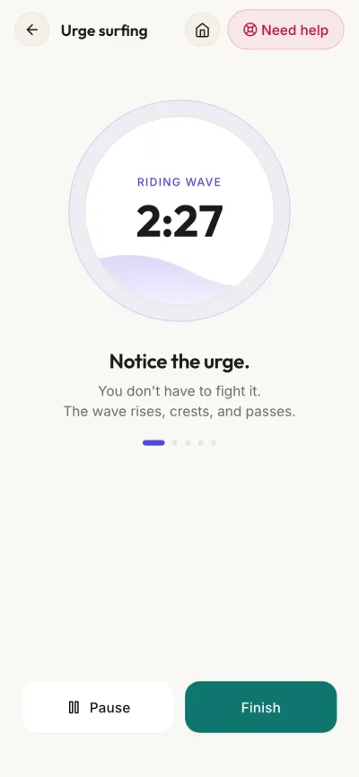

Urge surfing: how to ride out a craving
Urge surfing means letting a craving rise, peak and pass without acting on it, and without fighting it either. You watch it the way you would watch a wave. People use it for drink, drugs, gambling, food and self-harm, and for the smaller pulls too.
If you might hurt yourself, call 112 or the Suicide Crisis Helpline on 0800 567 567 now.
This page is a companion, not treatment. If you are withdrawing from alcohol or drugs, get medical help, because stopping suddenly can be dangerous.
The idea comes from Alan Marlatt's work on relapse prevention. Instead of struggling against the wave or letting it sweep you away, you ride it. If you are in the middle of one right now, start with the next part and read the rest later.
If you are in the middle of one right now
- Put a little distance between you and it. Step outside, put the bottle or the phone in another room, or just turn away.
- Breathe out longer than you breathe in. In for four, hold for four, out for six.
- Find the urge in your body. A tight chest, a dry mouth, restless hands. Name where it is.
- Give it a number from 1 to 10.
- Ride it for two or three minutes. Don't argue with it and don't obey it. Just keep noticing.
- Give it a number again. Up, down or the same, you are still here and you have not acted. Ride another round.

The WiseMind urge surfing timer runs these rounds with you: a wave that rises and falls, a check-in with your body, and a new prompt every 30 seconds. It works offline.
Why an urge is like a wave
An urge builds, crests and falls. Fighting it keeps all your attention on it, and giving in teaches your brain that the urge gets what it wants. Watching it does neither.
Surfing doesn't mean the urge stops being strong. It means you stay on top of it while it is strong, and you are still there when it drops.
How long does an urge last?
There is no fixed clock. It differs from person to person and from one day to the next. What stays the same is the shape: an urge you don't feed rises, peaks and then eases, usually within minutes rather than hours. If it comes back, that is a new wave, and you can ride that one too.
DBT teaches the same picture: an urge will go, as the ones before it did. Each time you ride one out without acting, your brain learns a little more that an urge and an action are not the same thing.
An urge surfing script
It is easier to surf a big wave if you have practised on small ones: the pull to check your phone, to have a second helping, to send a reply right now. When you are calm, read this slowly, pausing between lines, or record yourself reading it.
- Sit or stand somewhere you can be still for a few minutes. Let your feet rest on the floor.
- Notice the urge, and name it plainly: "I want a drink." "I want to check." "I want to go."
- Find where it lives in your body. Your chest, your throat, your hands, your stomach. Is it heat, pressure, a pull, a buzz?
- Breathe slowly, and let the breath move around the feeling instead of pushing it away.
- Picture yourself on a board, on top of the wave. You don't have to stop the wave. You only have to stay on.
- Watch it change. It might get stronger first. Notice the moment it peaks.
- Notice it ease. When it does, notice that you didn't act on it, and that you are still here.
Is urge surfing CBT or DBT?
Both use it. Alan Marlatt coined the term for relapse prevention, a cognitive behavioural approach to addiction. Marsha Linehan's DBT skills manual (2015) teaches it too, as a mindfulness skill for urges and addictive behaviour, and mindfulness-based relapse prevention builds on it. It works for any urge you want to stop acting on, not only drink or drugs.
Does urge surfing work?
The evidence is real but modest. In a small 2009 study, 123 student smokers went through a task designed to set off cravings, and some were given brief urge surfing instructions. Their urges were no weaker than everyone else's, but over the next week they smoked fewer cigarettes. In other words, it changed what they did with the urge, not the urge itself.
In a 2014 trial with 286 adults who had finished addiction treatment, a mindfulness-based relapse prevention course, which trains this same skill of noticing a craving without acting on it, was compared with standard relapse prevention and usual aftercare. A year later, the mindfulness group reported fewer days of drug use and less heavy drinking than the other two.
Neither study means urge surfing works on its own for everyone. It is one skill among several, and it works best with support around it.
If you act on the urge
It happens, and it is not the end of anything. Researchers who study relapse have a name for the guilt and the "I've blown it" feeling after a slip, and they found that feeling can push people further than the slip itself did. They also found that going from one slip to a full relapse is not inevitable.
- Get yourself safe first.
- Drink some water and eat something.
- Tell one person: a sponsor, a friend, a counsellor.
- Go to a meeting. There are NA meetings across the Western Cape, in person and online.
- Or call the Substance Abuse Helpline on 0800 12 13 14.
Later, when you are steadier, look at what came before it. Not tonight. A simple place to start is the check many recovery groups use, HALT: were you hungry, angry, lonely or tired?
When the wave is too big
Sometimes you can't watch an urge, because your body is too flooded to sit with anything. Other skills can bring you down far enough to start:
- STOP. Stop, take a step back, observe, proceed mindfully. A pause before you do anything at all. Here is how the STOP skill works.
- The cold reset. Thirty seconds of cold water on your face sets off the dive reflex and slows your heart. It is the T in the DBT skill TIPP. Not recommended if you have a heart condition or an eating disorder.
- Paced breathing. In for four, hold for four, out for six, for a few minutes, until you can notice the urge again.
Help in South Africa
These lines are free, as listed by SADAG.
- Emergency services112From any mobile, 24 hours
- Suicide Crisis Helpline0800 567 567SADAG, 24 hours
- Substance Abuse Helpline0800 12 13 1424 hours, or SMS 32312
- Cipla Mental Health Helpline0800 456 789SADAG, 24 hours
Numbers checked against SADAG's list on 26 September 2026.
Alongside, not instead
Urge surfing is a skill, not a cure. It works best alongside a counsellor, a doctor or a fellowship. If you would like it in your pocket, WiseMind Companion has the urge surfing timer, paced breathing, the cold reset and Western Cape NA meetings in one free app that works offline. It is in beta on Android, and you can join the testers.
Sources
Larimer ME, Palmer RS, Marlatt GA. Relapse prevention: an overview of Marlatt's cognitive-behavioral model. Alcohol Research & Health, 1999;23(2):151-160.
Linehan MM. DBT Skills Training Manual, 2nd edition. Guilford Press, 2015. Chapter 10, Distress Tolerance Skills.
Bowen S, Marlatt A. Surfing the urge: brief mindfulness-based intervention for college student smokers. Psychology of Addictive Behaviors, 2009;23(4):666-671.
Bowen S, Witkiewitz K, Clifasefi SL, et al. Relative efficacy of mindfulness-based relapse prevention, standard relapse prevention, and treatment as usual for substance use disorders. JAMA Psychiatry, 2014;71(5):547-556.